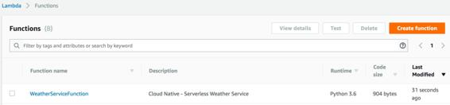

AWS Lambda function creation and configuration
Sign in to the AWS console and select the Lambda from the under the Compute services. Then, follow these instructions to create a Lambda function:
- Click on the Create a function button.
- Select the Blueprint option, and choose the microservice-http-endpoint-python3 blueprint.
- Click on the Configure option, and then specify the following values. The following values will be used to configure the Amazon API Gateway endpoint for this microservice:
- Set API Name to Serverless Weather Service.
- Set Deployment Stage to prod.
- For Security, set it to Open. Using this as the option, we will be able to access our API without any credentials (for production workloads, it's always recommended to enable API security with either the AWS IAM or Open with access key options).
- In Create function, specify the following values:
- Basic information section:
- Enter a function name (for example, WeatherServiceFunction).
- Select Python 3.6 from the Runtime list.
- For Description, use cloud-native - Serverless Weather Service.
- Lambda function code:
- In the Code Entry Type field, select the Upload a .zip file option. Get the sample Python code ZIP file, Cloudnative-weather-service.zip, from the https://github.com/PacktPublishing/Cloud-Native-Architectures GitHub location and upload it.
- Lambda function handler and role:
- For the handler, specify the value as lambda_function.lambda_handler.
- For the Role, select the option Create new role from template(s).
- For the Role Name, specify WeatherServiceLambdaRole.
- In the Policy Templates option, select the dropdown with the value Simple Microservice Permissions.
- Tags:
- Specify Key as Name and Value as Serverless Weather Microservice.
- Advanced settings:
- Set the Memory selection to 128 MB.
- Set Timeout value as 0 minutes and 30 seconds.
- Leave the rest of the settings with the default value.
- After the preceding configurations are done, review the settings on the final screen and hit Create function. In a matter of a few minutes, your Lambda function will be created and you should be able to view it on the Functions list, as follows:

As for the logic, within the Lambda code, it's a simple code that does three things:
- Retrieves the zip and appid parameters from the received request.
- Invokes the GET operation on OpenWeatherMap's API with the zip and appid parameters as inputs.
- Receives the response and sends it back to the API Gateway to be returned to the end user.
The code is as follows:
import boto3
import json
from urllib.request import Request, urlopen
from urllib.error import URLError, HTTPError
print('Loading function')
def respond(err, res=None):
return {
'statusCode': '400' if err else '200',
'body': err if err else res,
'headers': {
'Content-Type': 'application/json',
},
}
def lambda_handler(event, context):
'''Demonstrates a simple HTTP endpoint using API Gateway. You have full access to the request and response payload, including headers andstatus code.'''
print("Received event: " + json.dumps(event, indent=2))
zip = event['queryStringParameters']['zip']
print('ZIP -->' + zip)
appid = event['queryStringParameters']['appid']
print('Appid -->>' + appid)
baseUrl = 'http://api.openweathermap.org/data/2.5/weather'
completeUrl = baseUrl + '?zip=' + zip + '&appid=' + appid
print('Request URL--> ' + completeUrl)
req = Request(completeUrl)
try:
apiresponse = urlopen(completeUrl)
except HTTPError as e:
print('The server couldn\'t fulfill the request.')
print('Error code: ', e.code)
errorResponse = '{Error:The server couldn\'t fulfill the request: ' + e.reason +'}'
return respond(errorResponse, e.code)
except URLError as e:
print('We failed to reach a server.')
print('Reason: ', e.reason)
errorResponse = '{Error:We failed to reach a server: ' + e.reason +'}'
return respond(e, e.code)
else:
headers = apiresponse.info()
print('DATE :', headers['date'])
print('HEADERS :')
print('---------')
print(headers)
print('DATA :')
print('---------')
decodedresponse = apiresponse.read().decode('utf-8')
print(decodedresponse)
return respond(None, decodedresponse)